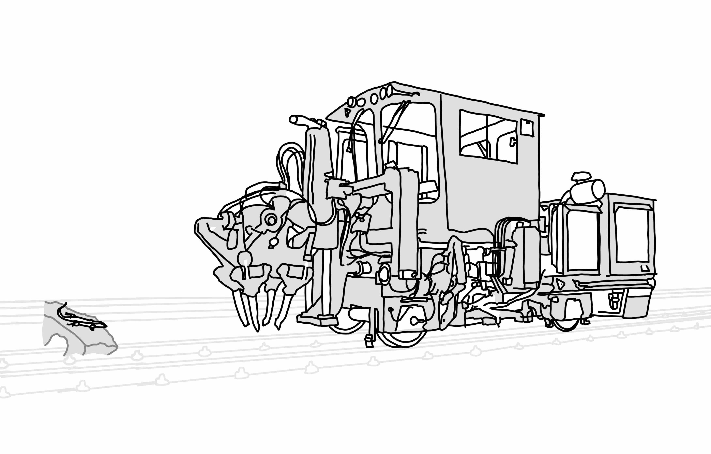
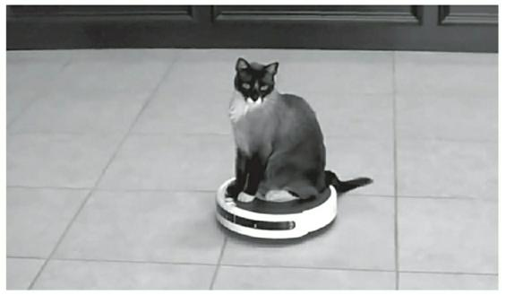
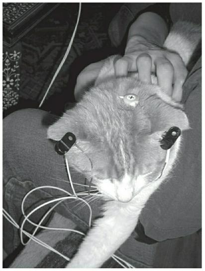
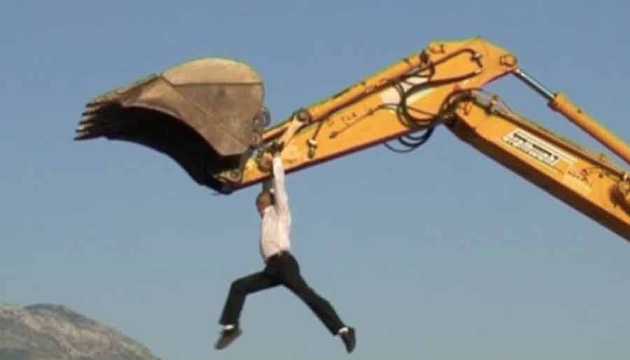

Le lézard et la bourreuse
Projet de Master 2 en Recherche en Design
2026

L’inspiration qui a motivé ce récit est le chapitre « le stade chaton aspirateur de l’humanité », écrit par Stéphane Degoutin et Gwenola Wagon pour l’ouvrage collectif Le comportement des choses. Ce chapitre part de l’observation d’une interaction entre deux types d’êtres : les chatons et les aspirateurs automatiques. Dans un format fictionnel très crédible et basé sur des technologies plausibles, les auteurs font le récit d’un projet très amusant : une gamme d'aspirateurs est développée spécifiquement pour permettre une communication entre eux et les chats. Le format du récit permet de présenter l’évolution du projet à travers le temps, ses réussites et ses écueils. L’intérêt du récit est également de s’émanciper de l’impossible et d’envisager un projet qui serait in-envisageable sinon. Dans le cas présenté ici, le projet est dystopique et donne à penser un stade non-souhaitable de l’humanité. Pour ma part, j’aimerais proposer un récit utopiste et donner à penser un futur désirable à partir d’un questionnement sur l’interaction que peuvent avoir deux types d’êtres des abords de voies ferrées : les bourreuses et les lézards. Mon hypothèse est que nos imaginaires des abords de voies ferrées sont trop étriqués. Je pense qu’il est très difficile d’envisager un futur sans concurrence entre les voyageur•ses quotidien•nes - et leurs besoins de transports efficaces et sûrs - et les êtres vivant non-humains qui habitent les voies ferrées.
Au cours de l'élaboration de cette histoire, ma formation de designer m'a permis de me sentir à l'aise dans l'imagination de possibilités diverses. J’ai mobilisé quatre références issues des champs de l’art et du design, dont je présente ici les aspects qui m’ont inspiré.
Cependant j'ai rapidement été confrontée aux limites dans mes connaissances sur certains sujets. J'ai d'abord ressenti des difficultés à produire des idées technologiquement poussées, et l'envie d'un regard d'ingénieur. Ensuite, l'incertitude sur le fait que ces idées soient pertinentes par rapport aux lézards et à l'intérêt des sciences pour les lézards, m'a donné envie de confronter ce récit avec un regard d’herpétologue, les scientifiques des lézards. Dans un troisième temps j'ai ressenti l'envie d'avoir des retours sur la plausibilité du contexte juridique et législatif créé dans l'histoire, avec des juristes et économistes.
Au fur et à mesure de l'écriture, cette envie d'un regard extérieur est devenu un besoin d'une plume extérieure, à cause des limites de mes connaissances. Par facilité j'ai donc fait appel à l'IA générative d’open AI. Comme l'apport de cet outil est ponctuel, j'ai tenu à présenter ici nos échanges, qui témoignent, d'une part, des apports de l'IA, et qui rendent compte, d'autre part, des intentions qui motivaient certains de mes choix formels.
En parallèle, cette idée d'un récit participatif faisant appel à l'imagination m'a donné envie d'utiliser le récit comme prétexte à l'enquête ethnographique. Ce médium me paraîtrait intéressant pour traiter de la capacité à l'imagination chez les professionnel•les des technologies, les ingénieurs, les herpéthologues, les juristes et les économistes. Le récit a d'abord été une base pour m'aider à imaginer des grilles d'entretien sur lesquelles interroger des enquêté•es. Dans un second temps, j'aimerais expérimenter, dans un cadre encore plus souple, ce que le récit fictif collaboratif permet d'étudier, dans les imaginaires de ces participant•es. J’ai donc joint à ce document le protocole d’enquête envisagé.

Organigramme de SNCF Réseau (source © SNCF Réseau) retouché par mes soins.
Le Groupe d’Étude des Populations de Reptiles du Réseau Ferré Français s’est alors questionné sur la compatibilité entre l’habitat des lézards et une pratique régulière de l’entretien des voies ferrées : le bourrage. Dans le but de stabiliser, de redresser ou de maintenir les rails d’aplomb, le gestionnaire d’infrastructure ferroviaire utilise une grande machine, appelée bourreuse-dresseuse-auto niveleuse. Montée sur roues, elle circule lentement sur les rails, et plonge régulièrement ses bourroirs, des pioches métalliques vibrantes, dans la masse de cailloux qui constitue le ballast. En se surélevant au-dessus des cailloux qui se recomposent, elle redresse les rails sur quelques dizaines de millimètres. Ces deux usages du ballast interrogent, l’habitat des abords de voies par les lézards est-il compatible avec l’utilisation de machines puissantes visant à entrechoquer et recompresser les cailloux entre eux ?
The ROMITAMP © ROBEL Bahnbaumaschinen GmbH
Afin de documenter davantage l'occupation du ballast par les lézards, et le rapport des lézards avec le passage des bourreuses, le Groupe d’Étude des Populations de Reptiles du Réseau Ferré Français et l’équipe de Recherche et Développement de SNCF Réseau ont mis en place des outils technologiques pointus. Les lézards ayant un sang froid, l’utilisation de détecteurs thermique n’est pas simple. Il n’est pas envisageable de détecter les corps des lézards, qui sont, par définition, à température ambiante et qui sont trop petits. En revanche il est possible de détecter les matériaux utilisés par les lézard pour la thigmothermie, c’est-à-dire les matériaux intermédiaires entre les lézards et les rayons du soleil. En effet, comme les lézards absorbent la chaleur indirecte de ces matériaux, aux yeux du détecteur thermique, ces matériaux enregistrent une baisse de température, certes légère, mais anormale en comparaison avec les matériaux les avoisinant. Pour étudier la fréquentation herpéthologique de certains tronçons, des poteaux supports de caténaires sont équipés de ce type de capteurs thermiques. La performance de ces capteurs est optimale, elle capte une gamme de températures restreinte pour une meilleure résolution de mesure, allant de 15°C, la température minimale d’activité des lézards, à 88°C, une température classique pour des rails chauffés par le soleil. Les modèles de capteurs mis en place par SNCF Réseau sont capables de mesurer la température d’une surface de 31mm à une distance de 35m. 31mm correspond à la borne inférieure de la classe granulométrique retenue pour le ballast, autrement dit la plus petite taille admise dans la distribution des dimensions des cailloux qui composent le ballast. L’évolution de la température des éléments composant les voies ferrées est donc comparée à l’évolution de la température ambiante ainsi qu’à l’orientation du soleil afin de déceler les variations inhabituelles. Ensuite ces données sont suivies dans le temps.
Photo libre de droit retouchée par mes soins, ajout de graphique
Un autre type de capteur mis en place est la caméra qui s’appuie sur une technologie d’Intelligence Artificielle. Alimentée par l’énergie solaire, elle est installée sur des points stratégiques et l’IA est entraînée à reconnaître les lézards, les orvets, les mulots, les feuilles mortes. Placées face à de longs murs de soutènement, des ouvrages d’art, ponts ou encore des passages à niveaux, la détection de lézards ou d’orvets déclenche l’enregistrement de la vidéo vidéo et transmet directement la vidéo et ses métadonnées au Groupe d’Étude des Populations de Reptiles du Réseau Ferré Français. Chaque passage de lézard ou d’orvet est automatiquement comptabilisé et l’on peut comparer la fréquentation de ces points stratégiques suivant les périodes, la météo, les années, les moments de passage de bourreuses. Les statisticiens de l’équipe comparent régulièrement l’évolution des Indices National et Régionaux d'Occupation Reptilienne des Infrastructures Ferroviaires (INORIF et IRORIF). Très régulièrement, des recherches sont lancées pour trouver de nouvelles données à prendre en compte dans les statistiques, et à anticiper par des équations. Par ailleurs, les vidéos permettent aux herpéthologues de suivre les individus qui ont été comptabilisés, de connaître le sexe des individus, leur taille, d’évaluer s’il s’agit des mêmes individus qui reviennent et, éventuellement, de suivre les activités qui occupent ces individus. Enfin, la technologie la plus prometteuse qui est mise en place est un modèle de caillou intelligent. Ces cailloux installés parmi les autres cailloux du ballast, présentent l’avantage de pouvoir mesurer en profondeur. Ils enregistrent les variations de températures, les variations de pression et de poids, l’humidité, les vibrations des passages de trains et même les vibrations plus subtiles causées par le passage de petits animaux. Les variations de poids et de pressions sont comparées avec celles enregistrées par les traverses, qui évoluent au passage des trains afin de déceler les passages de lézards, même au moment où un train passe. Les cailloux permettent de définir des zones d’intérêt, c’est-à-dire des zones où le plus de présences sont enregistrées, ou des zones enregistrant des variations inhabituelles, y compris des baisses de fréquentation. Des groupes interdisciplinaires sont régulièrement envoyés dans ces zones d’intérêt et des suivis sont mis en place dans ces zones. Pour l’étude en particulier des comportements des lézards au passage des bourreuses, les vibrations enregistrées par les cailloux intelligents sont comparées avec les paramètres de vibration des bourreuses, afin de déceler les variations dûes au passage des lézards et autres petits animaux. L’étude comparative des données récoltées est surtout utilisée pour étudier les changements de comportement des lézards avec le passage des bourreuses. Le passage d’une bourreuse est rare, environ 1 fois tous les 3, 5 ou 8 ans. À cette occasion, on compare la fréquentation habituelle du tronçon avec la fréquentation au moment du passage de la bourreuse : 1h avant le passage de la bourreuse, quelques heures après, quelques jours après et quelques mois après. Les bourreuses elles-mêmes sont équipées de caméras à 360° qui captent l’environnement proche et lointain des véhicules, et dont les images sont transmises au Groupe d’Étude des Populations de Reptiles du Réseau Ferré Français. Les objectifs consistent à comprendre à quelle distance les lézards détectent les bourreuses, comment cela évolue suivant les zones géographiques, suivant les modèles de bourreuses, suivant leurs paramètres de réglages de vibrations ou encore suivant la fréquence des opérations de bourrage sur le tronçon. Il s’agit également d’étudier les comportements qu’adoptent les lézards à la détection d’une bourreuse, et surtout, les bourreuses présentent-elles un danger pour les populations de lézards ? On s’interroge également sur les zones refuges utilisées par les lézards, les itinéraires de fuite empruntés par les lézards, le moment où ils reviennent sur le tronçon bourré ou encore le degré d’intérêt des voies récemment bourrées pour les lézards. La mise en place de ces dispositifs est une grande réussite et permet aux chercheur•ses d’accélérer leurs recherches et d’avoir une meilleure compréhension de l’occupation des ballasts par les lézards. Bien qu’étant une réussite sur tous les points, des critiques ont émergé envers la politique herpétologique de SNCF Réseau. L’équipe de comunity managers de SNCF, chargée d’informer en temps réel des actualités du traffic sur les réseaux sociaux et de communiquer avec les voyageur•ses, a fait remonter à la direction de SNCF voyageur une vague de critiques. Les voyageur•ses quotidien•nes, les premier•es concerné•es par le réseau ferré, se sentent délaissé•es pour les profits qu’apporte l’étude des lézards à SNCF Réseau.


 Mais pour toute l’entreprise SNCF Réseau, abandonner les études des lézards est devenu inconcevable.
Depuis que les équipes de SNCF Réseau ont été législativement et économiquement forcées à recevoir
le Responsable Synergies Écosystémiques, elles se sont rendues familières des lézards. Les lézards
vivaient à l’origine dans des habitats ouverts, dont certains ont progressivement été remplacés par
des paysages anthropisés. Malgré tout, des milieux anthropisés comme les cimetières ou les voies
ferrées reproduisent de nombreuses caractéristiques recherchées par les lézards. Alors qu’ils ne
sont pas du tout en voie de disparition, les équipes de SNCF Réseau ont décidé d’enfin valoriser le
fait qu’ils soient un taxon avec lequel on a des affinités et avec lequel on peut facilement
cohabiter. Au-delà de l’étude des reptiles, SNCF Réseau a mis en place le fait de prendre soin des
reptiles des voies ferrées comme principe directeur. Résoudre la question de la cohabitation des
lézards et des bourreuses est devenu impératif.
Dans le but de rassurer les voyageur•ses sur l’intérêt de l’étude des lézards des voies ferrées, une
vaste campagne de communication a été mise en place. L’équipe de communication de SNCF Réseau a
placardé des affiches en gare « on compte les reptiles pour vous éviter de compter vos sous en fin
de mois », en réponse aux nombreux « et on paye 90€ par mois pour ça », puisque le principe du
protecteur-bénéficiaire permet au modèle économique de SNCF Réseau de rester viable. « Vous aimez
quand la végétation n’entrave pas le trajet du train ? Bah les lézards aussi, donc nous sommes faits
pour nous entendre ». Une section de l’application idf mobilité est même développée dans le but de
diffuser en temps réel la localisation des lézards. Les voyageur•ses occupent alors une partie du
trajet à compter les lézards sur leur écran. Ils s’étonnent de leur nombre important. Les
voyageur•ses profitent de l’attente en gare et de chaque arrêt du train pour chercher de leurs
propres yeux les lézards répertoriés par les détecteurs.
Ces nouvelles pratiques suivent la configuration d’un zoo inversé. Les humain•es gardent toujours la
posture des regardeurs et des soigneurs ou protecteurs, en revanche ce sont désormais les animaux
qui évoluent en liberté et les humain•es qui restent enfermés derrière la vitre de leur train. De
cette manière, nous continuons de tisser du lien entre espèces, tout en laissant aux animaux leur
liberté.
Les voyageur•ses s’amusent à suivre les trajets des lézards, parfois on peut voir des lézards supers
sapides parce qu’ils sont sur des trains de matériaux. À force de suivre les activités des lézards
sur leurs écrans, quelques voyageur•ses mentionnent, dans les tweets, de rares, mais massifs,
mouvements de lézards, les lézards prennent tous une direction similaire. Un voyageur fait le lien
entre l’un de ces mouvements de lézards, qui a eu lieu le mois d’avant, et la chute d’un arbre. En
s’y intéressant de plus près, le Groupe d’Étude des Populations de Reptiles du Réseau Ferré Français
a pu établir des correspondances entre les mouvements massifs de lézards et certains incidents des
abords de voies : glissements de talus, éboulements, chutes d’arbres. Les lézards savent anticiper
ces incidents et cette faculté des lézards intéresse hautement le gestionnaire réseau pour améliorer
sa fiabilité, avec ses mots d’ordre sécurité et régularité.
Grâce à la mise en place d’un suivi des mouvements massifs de lézards, plusieurs incidents sont
anticipés et mieux gérés. Une sécheresse de terrain est anticipé avant de devenir un incendie,
plusieurs glissements de talus sont anticipés. Finalement le projet l’attention aux lézards s’est
révélé utile pour SNCF Réseau et les voyageur•ses elleux-même. De nouvelles campagnes de
communication confortent la directive herpétologique de la SNCF.
« Parce que vous prêtez attentions aux lézards, ils vous la rendent. 3 glissements de talus et 1
incendie évités sur le réseau francilien ce mois-ci »
Les voyageur•ses ont des réactions très favorables, ils se mettent également à adorer les
lézards.
Mais pour toute l’entreprise SNCF Réseau, abandonner les études des lézards est devenu inconcevable.
Depuis que les équipes de SNCF Réseau ont été législativement et économiquement forcées à recevoir
le Responsable Synergies Écosystémiques, elles se sont rendues familières des lézards. Les lézards
vivaient à l’origine dans des habitats ouverts, dont certains ont progressivement été remplacés par
des paysages anthropisés. Malgré tout, des milieux anthropisés comme les cimetières ou les voies
ferrées reproduisent de nombreuses caractéristiques recherchées par les lézards. Alors qu’ils ne
sont pas du tout en voie de disparition, les équipes de SNCF Réseau ont décidé d’enfin valoriser le
fait qu’ils soient un taxon avec lequel on a des affinités et avec lequel on peut facilement
cohabiter. Au-delà de l’étude des reptiles, SNCF Réseau a mis en place le fait de prendre soin des
reptiles des voies ferrées comme principe directeur. Résoudre la question de la cohabitation des
lézards et des bourreuses est devenu impératif.
Dans le but de rassurer les voyageur•ses sur l’intérêt de l’étude des lézards des voies ferrées, une
vaste campagne de communication a été mise en place. L’équipe de communication de SNCF Réseau a
placardé des affiches en gare « on compte les reptiles pour vous éviter de compter vos sous en fin
de mois », en réponse aux nombreux « et on paye 90€ par mois pour ça », puisque le principe du
protecteur-bénéficiaire permet au modèle économique de SNCF Réseau de rester viable. « Vous aimez
quand la végétation n’entrave pas le trajet du train ? Bah les lézards aussi, donc nous sommes faits
pour nous entendre ». Une section de l’application idf mobilité est même développée dans le but de
diffuser en temps réel la localisation des lézards. Les voyageur•ses occupent alors une partie du
trajet à compter les lézards sur leur écran. Ils s’étonnent de leur nombre important. Les
voyageur•ses profitent de l’attente en gare et de chaque arrêt du train pour chercher de leurs
propres yeux les lézards répertoriés par les détecteurs.
Ces nouvelles pratiques suivent la configuration d’un zoo inversé. Les humain•es gardent toujours la
posture des regardeurs et des soigneurs ou protecteurs, en revanche ce sont désormais les animaux
qui évoluent en liberté et les humain•es qui restent enfermés derrière la vitre de leur train. De
cette manière, nous continuons de tisser du lien entre espèces, tout en laissant aux animaux leur
liberté.
Les voyageur•ses s’amusent à suivre les trajets des lézards, parfois on peut voir des lézards supers
sapides parce qu’ils sont sur des trains de matériaux. À force de suivre les activités des lézards
sur leurs écrans, quelques voyageur•ses mentionnent, dans les tweets, de rares, mais massifs,
mouvements de lézards, les lézards prennent tous une direction similaire. Un voyageur fait le lien
entre l’un de ces mouvements de lézards, qui a eu lieu le mois d’avant, et la chute d’un arbre. En
s’y intéressant de plus près, le Groupe d’Étude des Populations de Reptiles du Réseau Ferré Français
a pu établir des correspondances entre les mouvements massifs de lézards et certains incidents des
abords de voies : glissements de talus, éboulements, chutes d’arbres. Les lézards savent anticiper
ces incidents et cette faculté des lézards intéresse hautement le gestionnaire réseau pour améliorer
sa fiabilité, avec ses mots d’ordre sécurité et régularité.
Grâce à la mise en place d’un suivi des mouvements massifs de lézards, plusieurs incidents sont
anticipés et mieux gérés. Une sécheresse de terrain est anticipé avant de devenir un incendie,
plusieurs glissements de talus sont anticipés. Finalement le projet l’attention aux lézards s’est
révélé utile pour SNCF Réseau et les voyageur•ses elleux-même. De nouvelles campagnes de
communication confortent la directive herpétologique de la SNCF.
« Parce que vous prêtez attentions aux lézards, ils vous la rendent. 3 glissements de talus et 1
incendie évités sur le réseau francilien ce mois-ci »
Les voyageur•ses ont des réactions très favorables, ils se mettent également à adorer les
lézards.


 Afin d’encourager l’opinion publique, le Groupe d’Étude des Populations de Reptiles du Réseau Ferré
Français décide d’organiser, une fois par an, des portes ouvertes de certains abords de voies du
Réseau ferré français. On profite de la journée internationale des lézards, le 14 août pour
organiser des visites guidées. On commence la visite guidée en gare, avec un support pédagogique et
une présentation des différentes espèces de lézards du réseau ferré. Ensuite on sort de la gare pour
accéder aux talus de gare, puis on longe la voie en contrebas du talus, le long d’un passe-câble. Le
ou la guide soulève ponctuellement des dalles qui recouvrent le passe-câbles afin de laisser
apparaître les lézards dissimulés, on longe comme ça jusqu’à accéder à un passage à niveau, endroit
stratégique ou il est probable de croiser des lézards suivant la météo. Le ou la guide présente
également la technologie IA de la caméra fixée juste au-dessus du passage à niveau et fait un topo
sur l’intérêt des nombreuses études menées par le Groupe d’Étude des Populations de Reptiles du
Réseau Ferré Français.
Afin d’enfin solutionner les conflits d’usages entre lézards et bourreuse, Le Groupe d’Étude des
Populations de Reptiles du Réseau Ferré Français met en place des cailloux massants. Ces cailloux
ressemblent à tous les autres cailloux du ballast, mais sont creux. Les lézards peuvent se glisser à
l’intérieur, ils se retrouvent alors dans une poche en caoutchouc, rendue souple par un rembourrage
d’eau. Ces matériaux emmagasinent et transmettent très bien la chaleur. On met également en place
des signaux d’annonce du passage de la bourreuse. À la reconnaissance de ces signaux, les lézards
peuvent se glisser dans un caillou massant et les vibrations de la bourreuse sont déformés par la
poche d’eau et retransmis en douceur aux lézards.
Afin d’encourager l’opinion publique, le Groupe d’Étude des Populations de Reptiles du Réseau Ferré
Français décide d’organiser, une fois par an, des portes ouvertes de certains abords de voies du
Réseau ferré français. On profite de la journée internationale des lézards, le 14 août pour
organiser des visites guidées. On commence la visite guidée en gare, avec un support pédagogique et
une présentation des différentes espèces de lézards du réseau ferré. Ensuite on sort de la gare pour
accéder aux talus de gare, puis on longe la voie en contrebas du talus, le long d’un passe-câble. Le
ou la guide soulève ponctuellement des dalles qui recouvrent le passe-câbles afin de laisser
apparaître les lézards dissimulés, on longe comme ça jusqu’à accéder à un passage à niveau, endroit
stratégique ou il est probable de croiser des lézards suivant la météo. Le ou la guide présente
également la technologie IA de la caméra fixée juste au-dessus du passage à niveau et fait un topo
sur l’intérêt des nombreuses études menées par le Groupe d’Étude des Populations de Reptiles du
Réseau Ferré Français.
Afin d’enfin solutionner les conflits d’usages entre lézards et bourreuse, Le Groupe d’Étude des
Populations de Reptiles du Réseau Ferré Français met en place des cailloux massants. Ces cailloux
ressemblent à tous les autres cailloux du ballast, mais sont creux. Les lézards peuvent se glisser à
l’intérieur, ils se retrouvent alors dans une poche en caoutchouc, rendue souple par un rembourrage
d’eau. Ces matériaux emmagasinent et transmettent très bien la chaleur. On met également en place
des signaux d’annonce du passage de la bourreuse. À la reconnaissance de ces signaux, les lézards
peuvent se glisser dans un caillou massant et les vibrations de la bourreuse sont déformés par la
poche d’eau et retransmis en douceur aux lézards.
 À mesure que les années passent, les voyageur•ses se rendent familier•es de la présence des lézards
et des activités menées par SNCF Réseau avec les lézards. L’équipe des Community managers fait
remonter à la direction de SNCF l’engouement des voyageur•ses pour assister au passage de la
bourreuse. SNCF commence alors à communiquer publiquement les dates et les tronçons où passe la
bourreuse. Tout le monde est au courant du jour du passage de la bourreuse sur son tronçon de
proximité et des journalistes animaliers sont autorisés à s’infiltrer dans les abords de voies, avec
les équipes de maintenance. De cette manière ils peuvent alors rester à l’affût devant des cailloux
massants pour attendre la venue des lézards. Les images sont retransmises à la télévision et chacun
se réjouit d’observer les lézards venir se rendre dans les cailloux massants pour prendre du
plaisir.
À mesure que les années passent, les voyageur•ses se rendent familier•es de la présence des lézards
et des activités menées par SNCF Réseau avec les lézards. L’équipe des Community managers fait
remonter à la direction de SNCF l’engouement des voyageur•ses pour assister au passage de la
bourreuse. SNCF commence alors à communiquer publiquement les dates et les tronçons où passe la
bourreuse. Tout le monde est au courant du jour du passage de la bourreuse sur son tronçon de
proximité et des journalistes animaliers sont autorisés à s’infiltrer dans les abords de voies, avec
les équipes de maintenance. De cette manière ils peuvent alors rester à l’affût devant des cailloux
massants pour attendre la venue des lézards. Les images sont retransmises à la télévision et chacun
se réjouit d’observer les lézards venir se rendre dans les cailloux massants pour prendre du
plaisir.

Photos retouchées par mes soins à partir des images de : agents d'entretien de SNCF Réseau, photo de Francois HENRY/REA et Wildlife Reporter, Richard Moore (Texas Country Reporter) sur Youtube.
LE STADE CHATON-ASPIRATEUR DE L’HUMANITÉ :
- Récit de connexion inter-espèces / machine : chatons-aspirateurs-humains
- Intérêt technologique du projet : technologies poussées EEG, aspirateur automatique qui interagit
- Un récit de projet pour envisager l’impossible : impossible à mettre en œuvre mais on peut quand même le penser et voir les déplacements de pensée qu’il permet
- Un récit de projet pour anticiper l’avenir du projet : pour une fois, c’est avant de mettre en œuvre le projet qu’on réfléchit à la manière dont il sera perçu, et aux effets (notamment négatifs) qu’il aura sur la société
- Le récit permet les rebondissements : dynamisme
- Ton humoristique et réalisme de la fiction
GOAT MAN :
- Récit de connexion inter-espèces
- Décalage humoristique : développé très sérieusement alors que l’objectif initial est humoristique
- Récit de projet : amener des métadonnées au projet
- L’humain qui se plie au monde des chèvres : prend la posture d’une chèvre, mange comme une chèvre, s’immerge parmi les chèvres
- L’engagement corporel du designer
TRANSPORTS EXCEPTIONNELS :
- Récit de connexion entre humain et machine
- Décalage humoristique : entre la machine massive, grossière et forte et le danseur agile, élégant, poétique
ANTFARM :
- Récit de connexion / communication inter-espèces
- Intérêt technologique du projet : les architectes ont envisagé toutes les technologies permises par leur époque, notamment vidéo et sonores, au service de la science et de la communication
- Récit de projet : amener des métadonnées pour un projet qui n’a jamais vu le jour
- L’humain qui se plie au monde des dauphins : observatoire dans le milieu des dauphins + bassins de l’observatoire directement ouverts sur l’océan, permettre le libre arbitre des dauphins étudiés
- L’engagement corporel/intellectuel des architectes : ils sont partis en voyage en Australie pour se connecter avec des dauphins après leurs dessins et avant la mise en œuvre du projet
Degoutin, Stéphane, et Gwenola Wagon « Le stade chaton-aspirateur de l’humanité »
Le Comportement des choses, Édité par Emanuele Quinz, Presses universitaires de Paris Nanterre, 2021, Chapitre accessible à ce lien : https://books.openedition.org/pupo/26872 Essai fictif dans un recueil collectif sur les objets animés. Explication des mésaventures autour d’un projet d’aspirateur connecté aux chats, le projet, sa perception par les utilisateurs, l’évolution du projet, les questions philosophiques qu’il soulève.

Image 1 source inconnue, image 2 Stone Mountain Counseling PC, stonemountaincenter.com. Images utilisées pour illustrer le chapitre « le stade chaton aspirateur de l’humanité », écrit par Stéphane Degoutin et Gwenola Wagon pour l’ouvrage collectif Le comportement des choses.
Thwaites Thomas Goat man
2016, New York, Princeton Architectural Press. Récit, par l’auteur-même du projet, style carnet de bord. La mise en place de son de devenir chèvre et de s’immerger pendant un temps prolongé, explication de ce qui a fait émerger l’idée de son projet, évolutions de son état d’esprit, détails techniques.

Thomas Thwaites, Goatman project. Image 1 expérimentation de plusieurs exosquelettes de quadrupèdes, image 2 Thomas Thwaites immergé dans son terrain avec les chèvres.
Compagnie Beau Geste, Transports exceptionnels
Vidéo d’une danse, entre un danseur et le bras d’une pelleteuse, et qui prend place sur un port. Vidéo accessible à ce lien : https://vimeo.com/51754510?fl=pl&fe=sh
Transports exceptionnels - compagnie Beau Geste. Capture d’écran de la captation vidéo de la danse réalisée à l’occasion de la 13ème édition du Kalamata International Dance Festival, Kalamata, Grèce, 2011.
Ant Farm, Dolphin Embassy,
Raconté par : Froger Lilian, 2023, De l’eau jusqu’au nombril: Ant Farm et les dauphins, Lannion, France, Sombres torrents. Présentation, par un historien de l’art, du projet « dolphin embassy » et de la démarche du collectif d’architectes états-uniens Ant Farm. L’émergence de l’idée du projet d’observatoire en pleine mer pour étudier la communication entre dauphins et humains, les démarches institutionnelles, projet mises en place par le collectif, et jusqu’au récit du voyage réalisé par le collectif en Australie pour se connecter aux dauphins.

Ant Farm, Dolphin Embassy, 1973. Dessins de Curtis Schreier.
PARTICIPANT•ES : (5)
- Herpéthologue
- Ingénieur
- Juriste
- Économiste
- SNCF Réseau
ÉTAPES :
- I - Entretiens individuels
- II - Fragments
- III - Écriture
I - ENTRETIENS INDIVIDUELS
Légende : en italique les questions très influencées par mon propre récit fictifQUESTION COMMUNE GÉNÉRALE
Prenez-vous le train ou les transports en commun régulièrement ?HERPÉTHOLOGUE
- Comment les lézards sont-ils étudiés actuellement ?
- Quels types de capteurs utilise-t-on sur eux ? Quels appareils et technologies ?
- Quelles informations intéressent actuellement les sciences au sujet des lézards ? L'évolution de densité de leur population ? Leur adaptation face à l'anthropocène, au réchauffement climatique ? Des fonctions qu'ils ont qu'on pourrait développer à travers le biomimétisme ?
- Même idéalement, si des capteurs ou technologies incroyables pouvaient exister, que chercherait-on à apprendre sur les lézards ?
- Imaginons un climat de collaboration idéale entre SNCF et herpéthologues (budget, intérêt), quelles études cela vous donnerait-il envie de mener ?
- Que pensez-vous de la cohabitation actuelle entre lézards et bourreuses ?
- Pensez-vous que les lézards puissent apporter quelque chose à la SNCF ou aux voyageur•ses ?
- Les lézards ont-ils un instinct qui leur permet d'anticiper certaines catastrophes ?
- Pensez-vous qu'une population de lézards puisse anticiper un glissement de talus ? Un feu ? La chute d'un arbre ?
- Pensez-vous qu'il soit réaliste d'envisager un format de capteurs permettant de suivre, au moins à-peu-près les positions des lézards aux abords de voies ferrées ? Si non détection thermique, détection sonore ? Mouvements ?
INGÉNIEUR
- Quelles technologies de pointe sont actuellement en développement et vous intéressent particulièrement ?
- Quels types d'appareils utilise-t-on dans les sciences pour étudier les animaux ? Les lézards ?
- S'il était possible d'imaginer des capteurs et technologies incroyables pour l'étude des lézards des voies ferrées, lesquelles envisageriez-vous ?
- Pensez-vous qu'il soit réaliste d'envisager un format de capteurs permettant de suivre, au moins à-peu-près les positions des lézards aux abords de voies ferrées ? Si non détection thermique, détection sonore ? Mouvements ?
JURISTE
- Quel répertoire d'actions législatives pourrait favoriser du budget et le développement des voies ferrées ?
- Pourrait favoriser du budget et de l'intérêt pour les sciences de la vie et de la Terre ?
- Pourrait favoriser une bonne entente entre lézards et SNCF Réseau / voyageur•ses ?
- Opération d'Intérêt National
- principe du pollueur payeur - protecteur bénéficiaire
- loi imposant à certaines PME cotées et aux grandes entreprises d'employer des ecology managers - qui fassent partie du dispositif décisionnel
ÉCONOMISTE :
- Quel répertoire d'actions économiques ou législatives pourrait favoriser du budget et le développement des voies ferrées ?
- Pourrait favoriser du budget et de l'intérêt pour les sciences ? Et les SVT ?
- Pourrait favoriser une bonne entente entre lézards et SNCF Réseau / voyageur•ses ?
- Opération d'Intérêt National
- principe du pollueur payeur - protecteur bénéficiaire
- loi imposant à certaines PME cotées et aux grandes entreprises d'employer des ecology managers - qui fassent partie du dispositif décisionnel
SNCF RÉSEAU
- Quel était votre rôle chez SNCF Réseau ? À quoi ressemblait votre travail ?
- Sans jugement, d’après vous, qui dérange qui aux abords de voies ferrées ? Les animaux ou SNCF Réseau ? Demander d’argumenter
- Les animaux ou les plantes sont-ils bénéfiques pour SNCF Réseau ? Pourraient-ils l’être ?
- Quelles actions sont mises en place à votre échelle pour la protection des animaux ?
- Y a-t-il des plantes ou animaux intrigants aux abords de voies ferrées, d’après vous ?
- Y a-t-il des agent•es SNCF Réseau qui, sans indication de ce type de la part de la hiérarchie, mettent en place des actions en faveur de la biodiversité ? Lesquelles ?
- Est-ce que vous pensez que c’est important de prendre soin d’animaux des abords de voies ferrées ?
- Et dans un cadre économique, législatif et technique idéal pour SNCF Réseau, penseriez-vous que c’est important ?
- À quelle fréquence passent les bourreuses ?